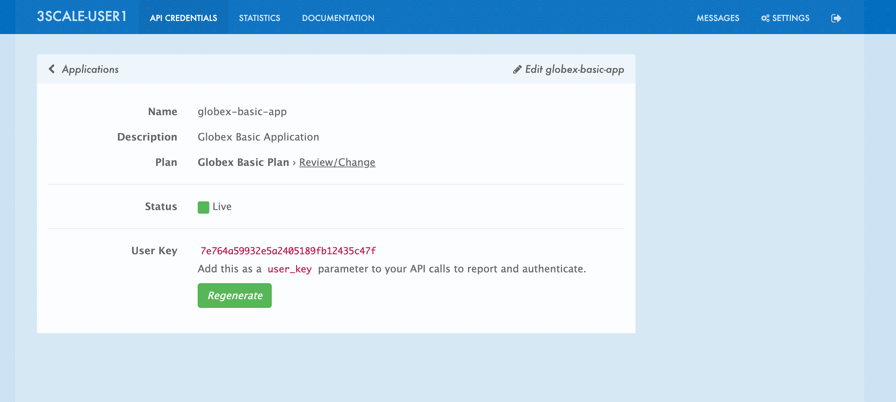
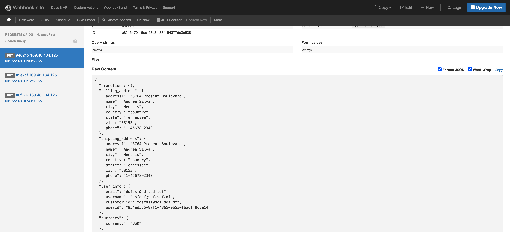

Solution Pattern: Manage and Secure APIs with an API First Approach See the Solution in Action 1. Setup the solution To provision the demo you will perform the following steps - each of which are explained in detail in the next sections: Gain access to Red Hat OpenShift. This solution pattern has been tested on OpenShift 4.15 Ensure you have the tools oc and ansible installed in your local environment such as your laptop Access the OpenShift cluster with cluster-admin privileges Log in to OpenShift with cluster-admin role via cli Run the Ansible playbook Run a bunch of scripts to deploy the Solution Pattern in your OpenShift cluster 1.1. Pre-requisites Here is the list of tools you need in your local enviroment so that you can use the automated installation. OpenShift CLI (oc client) Ansible CLI with Ansible kubernetes.core module To check if you have the cli tools, you can open your terminal and use following commands: oc version #openshift cli client ansible --version ansible-galaxy --version ansible-galaxy collection list #the list should include kubernetes.core If you can’t see kubernetes.core collection listed, you can install it with ansible-galaxy: ansible-galaxy collection install kubernetes.core 1.2. Installing the demo Login to your OpenShift cluster as cluster-admin (because a number of operators will need to be installed) Click on the username on the top right hand, and then click on Copy login command. This will open another tab and you will need to login again Click on Display token link, and copy the command under Log in with this token. This will look like this oc login --token=<token> --server=<server> Clone the ansible scripts as follows in an appropriate folder in your local environment git clone https://github.com/rh-solution-pattern-api-versioning/globex-ansible Let’s walk te. Ensure that the ansible playbook is deployed without errors ansible-playbook playbook.yml This is the output you get from the above ansible command: PLAY RECAP **************************************************************************************** localhost : ok=86 changed=17 unreachable=0 failed=0 skipped=31 rescued=0 ignored=0 That’s it! You are set to try out this Solution Pattern! ｡◕‿◕｡ 1.3. Personalize the instructions To personalize the rest of the instructions to your OpenShift enviroment, At the top-right of this page enter subdomain to match your OpenShift cluster under the Your Workshop Environment section Press enter or click on the Set button The menubar and the rest of this walkthrough guide will be updated with the username and subdomain as shown below The subdomain would look something like this apps.cluster-name.guid.subdomain.myopenshift.com 2. Workshop Walkthrough guide Here is an overview of what you will achieve The Design, Govern and Mock phases of API lifecycle has been discussed in other solutions patterns; so in this pattern we will skip straight to the implementing API versioning. So, this solution pattern focuses on how 3scale API management and OpenShift can help with API versioning. 2.1. Step 1: Overview Let’s walk through an overview of the components that have been setup already Launch the OpenShift console and login Navigate to Topolgy from the Developer’s view of the globex-user1 project The center section under the name globex-app-user1 contains the components needed for the first version of the application and the api. globex-ui is the retail website order-placement is the microservice which implements the OrderPlacement API catalog and inventory components provide the services needed for the retail websites. The left section v1-1 is the (future looking) setup for v1-1. This is at zero pods at the moment because the corresponding API version is not setup yet The right v2-0 is the (future looking) setup for v2-0. This is at zero pods at the moment because the corresponding API version is not setup yet 2.2. Step 2: Enable Version 1.0.0 2.2.1. API specification and governance <TBC> 2.2.2. Update OrderPlacement backend env variable The backend of OrderPlacement API for the purpose of the demo, acts as a facade to receive the payload, and then posts the Order payload to a https://webhook.site/. In real life, there are a number ways this payload can be handled payload maybe be processed asynchoronously through a event driven architecture payload maybe stored in a a SQL based database or a no-SQL database payload maybe need to be posted to a number of other downstream systems. The ORDER_PLACEMENT_API env variable of the OrderPlacement backend service has a placeholder which needs to be replaced. Launch https://webhook.site/, and copy the the URL displayed as Your unique URL by clicking on it From your command prompt, set an environment variable export WEBHOOKSITE=<webhoot.site url that you copied in the previous step> Run the following command to update the backend service’s environment variables. oc set env deployments/order-placement --overwrite ORDER_PLACEMENT_API=$WEBHOOKSITE -n globex-user1 This is how the env variables of the the Order Placement service will look like after update. Any payload being POSTed to this service will now be sent to this webhook site for inspection. Instead of a plain JSON consider posting this as a CloudEvents which can be versionined using the CloudEvent headers, and then routed to different handling services using Knative Eeventing 2.2.3. Setup 3scale entities To integrate and manage the Product Catalog API in 3scale, you need to create Products and Backend. On the OpenShift console, click on the icon in the top menu on the right. This opens an editor where you can enter a Kubernetes resource definition in YAML format. Paste the following Backend 3scale Custom Resource in the editor, and click on Save apiVersion: capabilities.3scale.net/v1beta1 kind: Backend metadata: name: globex-order-placement-backend namespace: globex-apim-user1 spec: name: "Globex Order Placement Backend" systemName: "globex-order-placement-backend" privateBaseURL: "http://order-placement.globex-user1.svc.cluster.local:8080" providerAccountRef: name: 3scale-tenant-secret metrics: hits: description: Number of API hits friendlyName: Hits unit: "hit" mappingRules: - httpMethod: POST pattern: "/" increment: 1 metricMethodRef: hits Click Create to create the 3scale Backend resource. The 3scale operator creates the Backend resource in your 3scale tenant. You are shown the Backend details page. Note under the Conditions section at the bottom of the page, the Type Synced is set with Status as True Click on 3scale to view the backend created for you. Login using (user1/openshift) 2.2.4. Create 3scale Product and ActiveDocs The next step is to create a 3scale Product, Application Plans for the Product, and also ActiveDocs for the Product Catalog API On the OpenShift console, click on the icon in the top menu on the right. This opens an editor where you can enter a Kubernetes resource definition in YAML format. Paste the following Product and ActiveDoc 3scale Custom Resource in the editor and click on Save apiVersion: capabilities.3scale.net/v1beta1 kind: Product metadata: name: globex-order-placement-product namespace: globex-apim-user1 spec: name: "Globex Order Placement" systemName: "globex-order-placement-product" metrics: hits: description: Number of API hits friendlyName: Hits unit: "hit" methods: v1_0_0: friendlyName: Method version 1.0.0 mappingRules: - httpMethod: POST pattern: "/v1" increment: 1 metricMethodRef: v1_0_0 - httpMethod: POST pattern: "/{version}" increment: 1 metricMethodRef: hits providerAccountRef: name: 3scale-tenant-secret applicationPlans: basic: name: "Basic Plan" setupFee: "0" published: true premium: name: "Premium Plan" setupFee: "100" published: true backendUsages: globex-order-placement-backend: path: /v1 --- kind: ActiveDoc apiVersion: capabilities.3scale.net/v1beta1 metadata: name: globex-product-catalog-activedoc namespace: globex-apim-user1 spec: activeDocOpenAPIRef: url: "https://raw.githubusercontent.com/rh-soln-pattern-api-versioning/api-spec/main/v1.0/OrderPlacementAPI-V1.0.yaml" published: true name: globex-order-placement-activedoc providerAccountRef: name: 3scale-tenant-secret productSystemName: globex-order-placement-product The resources are created for you. You can view them on 3scale as well. ActiveDoc can be viewed under Product>ActiveDocs ActiveDoc is created with OpenApi Specs. For the purpose of this solution pattern we are using a prebuilt OpenAPI. Apicurio API designer is a great too to build API designs. You can then manage it with Apicurio Service Registry 2.2.5. Setup Methods and mapping rules for Order Placement API Version 1.0.0 Now that the foundationation is setup, let us create the Methods and Metrics for the Order Placement API product. This will help us to map different backend services for different URL versions, and also help to track metrics based on hits for different backend service versions In 3scale, from the Globex Order Placement navigate to Product→ Integration → Methods and Metrics. Click on Add Method Fill in the details as shown below Now click on Add a maping rule which will help to route a request to the right version of backend service E.g. `api.globex.com/v1/OrderPlacement` will go to `v1` backend service Fill the New Mapping Rule form as shown below, and click on Create mapping rule 2.2.6. Add New mapping rule for overall metric tracking Add a new mapping rule with the following details This will help you track all the metric to Globex Order Placement API in total. 2.2.7. Promote ApiCast Before you can start accessing the Globex Order Placement API, you must promote the APIcast configuration as below. APIcast is an NGINX based API gateway used to integrate your internal and external API services with the Red Hat 3scale Platform. In this workshop we use the two built-in APICast (staging and production) that come by default with the 3scale installation. They come pre-configured and ready to use out-of-the-box. From 3scale homepage, under the Products section, click on Globex Order Placement to view the Product’s overview page. From the left hand menu, navigate to Integration > Configuration Under APIcast Configuration, click Promote to v.x Staging APICast to promote the APIcast configurations. Similarly click Promote to v.x Production APICast Note that Globex Order Placement Backend shows that the backend is mapped as "v1". The API will then be accessed via v1 path. This helps in versioning this OrderPlacement API as 1.0.0 2.2.8. Signup for access by creating an Application for a Developer From the Import YAML form, paste the following Developer and Application 3scale Custom Resource in the editor and click on Save apiVersion: capabilities.3scale.net/v1beta1 kind: DeveloperAccount metadata: name: globex-developeraccount spec: orgName: Globex providerAccountRef: name: 3scale-tenant-secret From the Import YAML form, paste the following Developer and Application 3scale Custom Resource in the editor and click on Save apiVersion: v1 kind: Secret metadata: name: globexuser.secret namespace: globex-apim-user1 type: Opaque stringData: password: openshift --- apiVersion: capabilities.3scale.net/v1beta1 kind: DeveloperUser metadata: name: admin spec: username: admin.globex email: admin@globex.com passwordCredentialsRef: name: globexuser.secret role: admin developerAccountRef: name: globex-developeraccount providerAccountRef: name: 3scale-tenant-secret --- apiVersion: capabilities.3scale.net/v1beta1 kind: DeveloperUser metadata: name: developer.globex namespace: globex-apim-user1 spec: username: developer.globex email: dev@globex.com passwordCredentialsRef: name: globexuser.secret role: member developerAccountRef: name: globex-developeraccount providerAccountRef: name: 3scale-tenant-secret --- apiVersion: capabilities.3scale.net/v1beta1 kind: Application metadata: name: basic-application1 namespace: globex-apim-user1 spec: accountCR: name: globex-developeraccount applicationPlanName: basic description: Basic Plan name: basic-plan productCR: name: globex-order-placement-product Next step, patch the globex-ui deployment with the API credentials and Staging APIcast URL. API credentials is found under Product (Order Placement API)> Applications > Listing > "basic". Copy the alphanumeric value found as User Key and create environement variable API_USER_KEY_VALUE_1_0_0  export API_USER_KEY_VALUE_1_0_0=<replace with API credentials> Run the following command to update the backend service’s env variables. oc set env deployments/globex-ui --overwrite API_USER_KEY_VALUE=$API_USER_KEY_VALUE_1_0_0 \ API_TRACK_PLACEORDER=https://globex-order-placement-product-3scale-user1-apicast-staging.%SUBDOMAIN%/v1/placeorder -n globex-user1 2.2.9. Testing this out Launch the retail website Login using any email address and a any 6digit password - this is just a simulation. Navigate to the Cool Stuff Store from the top menu. Add a few things to cart. Click on Cart from the top menu and Proceed to Checkout. Click on Autofill form to make it easy to fill this form. Click on Submit Order You must see a success message 2.2.10. View Traffic Analytics Try placing a few orders to generate traffic. You can also place dummy orders by invoking the APICast endpoint on Postman or similar. Append the following endpoint with the API credentials for the application created. If needed, click instructions to see how to access API credentials. https://globex-order-placement-product-3scale-user1-apicast-staging.%SUBDOMAIN%/v1/placeorder?user_key=<user key from Application> Navigate to 3scale Dashboard, and click on globex-order-placement to view the Product Details Click on the Analytics → Traffic link on the left hand side menu. You will see the Hits details. This section provides insights in terms of the number of hits for the product and other traffic analysis details as well. 2.3. Step 3: Enable Version 1.1.0 In this setp let’s introduce version 1.1.0 of OrderPlacement API. A non-breaking change is introduced to allow for a new field called Delivery Instructions. The following summarizes some of the critical impact across the different personas As an API provider Use APICurio studio to make changes to OpenAPI Specification to include Optional field Delivery Instructions and change version from 1.0.0 to 1.1.0 Publish this on Apicurio Service Registry Update 3scale for new Backend (version 1.1.0), update Product to point to the Backend version 1.1.0, update ActivdDoc Point to new Backend service which adheres to the new API specification As mentioned earlier the APICurio studio and Apicurio Service Registry changes are not included to keep this solution pattern accessible and not overtly too lengthy. As a Backend service developer Create a new branch with name v1.1.0 and change the Order Placement service to allow for Delivery Instructions Update any POJOs or mapping - ideally it is better to handle this as a JSON payload rather than mapping to a POJO so as to allow for minimal impact Update validations against new OpenAPI spec. In our case we use JSON Schema based validation. As an API consumer May choose to consume the new API at their own pace. Changes includ update to the UI to allow for the new field Delivery Instructions. Change any validations if necessary. Ensurea adherence to new OpenAPI specification 2.3.1. New version of the backend service The backend service deployment for version 1.1.0 is in place to keep this pattern simple, but is set as replica 0 (i.e, it is at zero pods) The OpenAPI specification for this version 1.1.0 has been converted onto JSON Schema and is part of this backend service. Click here to view the version 1.1.0 JSON Schema. Note the introduction of delivery_instructions field which is optional Patch this deployment with the webhook.site URL that you have setup earlier. From your command prompt echo $WEBHOOKSITE to make sure you have the env variable accessible Run the following command to update the backend service’s environment variables. oc set env deployments/order-placement-v1-1-0 --overwrite ORDER_PLACEMENT_API=$WEBHOOKSITE -n globex-user1 From the Developer Perspective, navigate to the globex-user1 namespace Click on the deployment and order-placement-v1-1-0 deployment, and from the Details tab displayed on the right hand side, scale the pod to 1. 2.3.2. Configure new Backend version 1.1.0 in 3scale Create a new backend with this YAML apiVersion: capabilities.3scale.net/v1beta1 kind: Backend metadata: name: globex-order-placement-backend-1-1-0 namespace: globex-apim-user1 spec: name: "Globex Order Placement Backend 1.1.0" systemName: "globex-order-placement-backend-1-1-0" privateBaseURL: "http://order-placement-v1-1-0.globex-user1.svc.cluster.local:8080" providerAccountRef: name: 3scale-tenant-secret metrics: hits: description: Number of API hits friendlyName: Hits unit: "hit" mappingRules: - httpMethod: POST pattern: "/" increment: 1 metricMethodRef: hits --- kind: ActiveDoc apiVersion: capabilities.3scale.net/v1beta1 metadata: name: globex-product-catalog-activedoc-v-1-1-0 namespace: globex-apim-user1 spec: activeDocOpenAPIRef: url: "https://raw.githubusercontent.com/rh-soln-pattern-api-versioning/api-spec/main/v1.1/OrderPlacementAPI-V1.1.yaml" published: true name: globex-product-catalog-activedoc-v-1-1-0 providerAccountRef: name: 3scale-tenant-secret productSystemName: globex-order-placement-product 2.3.3. Update Globex Order Placement Product Update the Product’s /v1 path to the new Backend with version 1.1.0. This means that the existing Backend needs to be deleted Navigate to Integration → Backends. Click the delete/trashcan icon shown against the Globex Order Placement Backend Choose OK when prompted Click Add a backend button Choose Globex Order Placement Backend 1.1.0 from the dropdown Choose /v1/ as path Click Add to Product Promote APICast configuration from Integration → Configuration → Promote to v.x Staging APICast and Promote to v.x Production APICast 2.3.4. Update UI to updated version 1.1.0 This is a backward compatible change. Therefore, the existing globex-ui 1.0.0 deployment will work as it is without any changes with the new Backend 1.1.0 version. You can test this out just to be sure :) When the UI developers are ready, they can make the following changes to start consuming the new changes, and send the new Delivery Instructions as part of the order payload. Run this command to update the image of globex-ui deployment to the 1.1.0 version oc set image deployment/globex-ui globex-ui=quay.io/rh_soln_pattern_api_versioning/globex-ui:1.1.0 -n globex-user1 2.3.5. Test it out Launch the globex-ui, login using a valid email address and 6 digit password Add a few things to the card and proceed to checkout Notice that there is a new field called Delivery Instructions. Provide some content for this new field, and click on Submit Order You should see a confirmation message that the order has been placed. Navigate to the webhook.site you have setup to check that the delivery_instructions is being passed on correctly 2.4. Step 4: Enable Version 2.0.0 In this setp let’s introduce version 2.0.0 of OrderPlacement API. A breaking change is introduced to merge First name and Last name into a single field. The same set of impact identified across the different personas while introducing version 1.1.0 also applies for a Major version change. The main impact is that, this version is NOT backward compatible. 2.4.1. New version of the backend service The backend service deployment for version 2.0.0 is in place to keep this pattern simple, but is set as replica 0 (i.e, it is at zero pods) The OpenAPI specification for this version 2.3.0 has been converted onto JSON Schema and is part of this backend service. Click here to view the version 2.0.0 JSON Schema. Note the introduction of delivery_instructions field which is optional Patch this deployment with the webhook.site URL that you have setup earlier. From your command prompt echo $WEBHOOKSITE to make sure you have the env variable accessible Run the following command to update the backend service’s environment variables. oc set env deployments/order-placement-v2-0 --overwrite ORDER_PLACEMENT_API=$WEBHOOKSITE -n globex-user1 From the Developer Perspective, navigate to the globex-user1 namespace Click on the deployment and order-placement-v2-0 deployment, and from the Details tab displayed on the right hand side, scale the pod to 1. 2.4.2. Configure new Backend version 2.0.0 in 3scale Create a new Backend version and ActiveDoc with this YAML apiVersion: capabilities.3scale.net/v1beta1 kind: Backend metadata: name: globex-order-placement-backend-2-0-0 namespace: globex-apim-user1 spec: name: "Globex Order Placement Backend 2.0.0" systemName: "globex-order-placement-backend-2-0-0" privateBaseURL: "http://order-placement-v2-0.globex-user1.svc.cluster.local:8080" providerAccountRef: name: 3scale-tenant-secret metrics: hits: description: Number of API hits friendlyName: Hits unit: "hit" mappingRules: - httpMethod: POST pattern: "/" increment: 1 metricMethodRef: hits --- kind: ActiveDoc apiVersion: capabilities.3scale.net/v1beta1 metadata: name: globex-product-catalog-activedoc-2-0-0 namespace: globex-apim-user1 spec: activeDocOpenAPIRef: url: "https://raw.githubusercontent.com/rh-soln-pattern-api-versioning/api-spec/main/v2.0/OrderPlacementAPI-V2.0.yaml" published: true name: globex-product-catalog-activedoc-2-0-0 providerAccountRef: name: 3scale-tenant-secret productSystemName: globex-order-placement-product 2.4.3. Update Globex Order Placement Product Add the new Backend as /v2 path. Navigate to Integration → Backends of the Globex Order Placement product . Click Add a backend button Choose Globex Order Placement Backend 2.01.0 from the dropdown Choose /v2/ as path Click Add to Product Navigate to Product→ Integration → Methods and Metrics. Click on Add Method Fill in the details as shown below Now click on Add a maping rule which will help to route a request to the right version of backend service E.g. `api.globex.com/v1/OrderPlacement` will go to `v2` backend service Fill the New Mapping Rule form as shown below, and click on Create mapping rule Promote APICast configuration from Integration → Configuration → Promote to v.x Staging APICast and Promote to v.x Production APICast You now have 2 Backends configured which would both work correctly when invoked via /v1/ and /v2/ paths. 2.4.4. Update UI to updated version 2.0.0 Run this command to update the image of globex-ui deployment to the 1.1.0 version oc set image deployment/globex-ui globex-ui=quay.io/rh_soln_pattern_api_versioning/globex-ui:2.0.0 -n globex-user1 Run the following command to update the backend service’s env variables. oc set env deployments/globex-ui --overwrite API_USER_KEY_VALUE=$API_USER_KEY_VALUE_1_0_0 \ API_TRACK_PLACEORDER=https://globex-order-placement-product-3scale-user1-apicast-staging.%SUBDOMAIN%/v2/placeorder -n globex-user1 2.4.5. Test it out Launch the globex-ui, login using a valid email address and 6 digit password Add a few things to the card and proceed to checkout Notice that there is a new field called Delivery Instructions. Provide some content for this new field, and click on Submit Order You should see a confirmation message that the order has been placed. Navigate to the webhook.site you have setup to check that the delivery_instructions is being passed on correctly  2.4.6. View Traffic Analytics of version 2.0.0 Try placing a few orders to generate traffic. You can also place dummy orders as dicussed earlier Navigate to 3scale Dashboard, and click on globex-order-placement to view the Product Details Click on the Analytics → Traffic link on the left hand side menu. You will see the Hits details split between the versions v1 and v2. //// === Step 4.a: Alternate way to enable Version 2.0.0 //// 2.5. Step 5: Manage and Analyse Analytics, consumer notification Especially with introduction of a breaking change, you will like to sunset your older version of the API at the earliest. You will need to start by notifying the consumers. Navigate to Audience (from top menu) → Accounts → Listing. You will the number of applications the Globex user has signed for. (in this case it is 2) Click on the hyperlink [2] You can now choose the relevants accounts to view the Bulk operations available. Click on Send email to send a notification saying something like this. Subject: Basic Plan of Globex Order Placement version 1.1.0 deprecation Body of Email: Hello Please note that Globex Order Placement version 1.1.0 is being deprecated and will not be available for new signups. The version 1.1.0 will be removed by <date>. Please refer to the Developer Portal for details of version 2.0.0 2.6. Make the 1.1.0 version unavailable for signups Navigate to Products → Globex Order Placement → Applications → Application Plans Click on the green checkboxes for Enabled and Visible columns for the Method version 1.0.0 to make it red as shown below. All calls to /v1/ will now fail authentication. 2. Architecture 4. Workshop